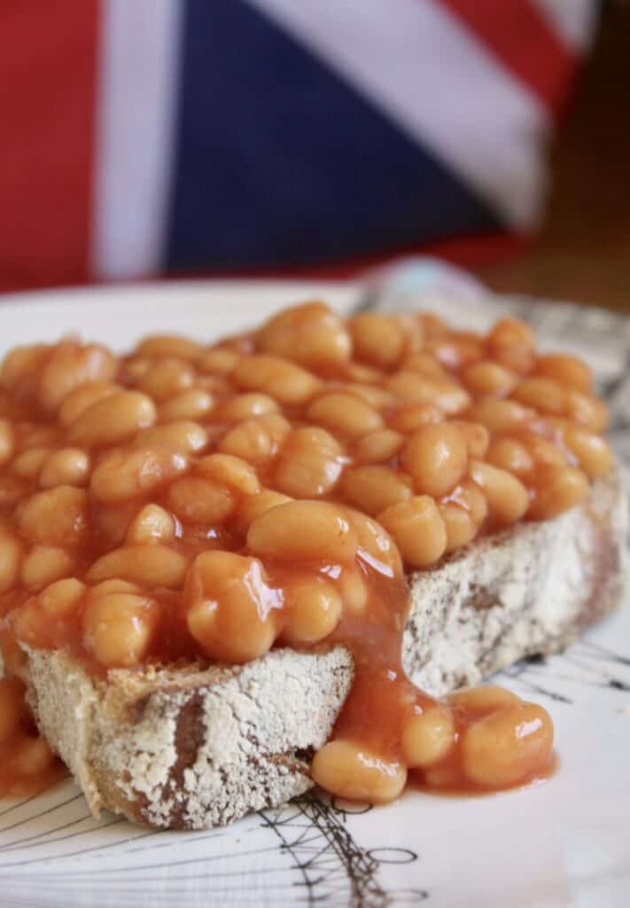

Beans On Toast

Description
A traditional breakfast item eaten by people that are from the UK. It contains bread that is toasted,
beans that are cooked. Consider using lots of butter on the toast.
Ingredients
- 1 Cup of the best baked beans in town.
- One slice of bread.
- A lot of butter for the toast
Steps
- Place bread in toaster.
- Cook beans in microwave for two minutes on power 10.
- Spread butter generously on the toasted bread.
- pour beans onto toast.
- Eat Up!